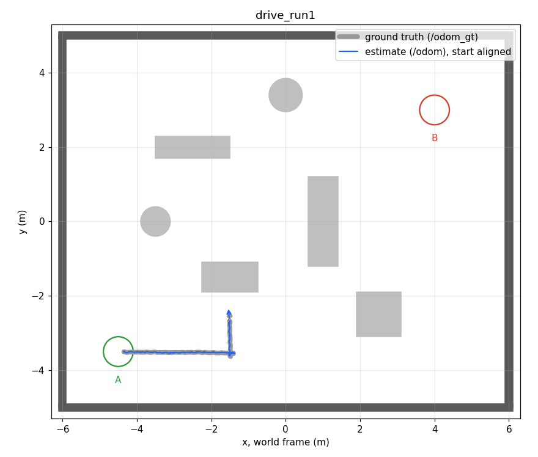
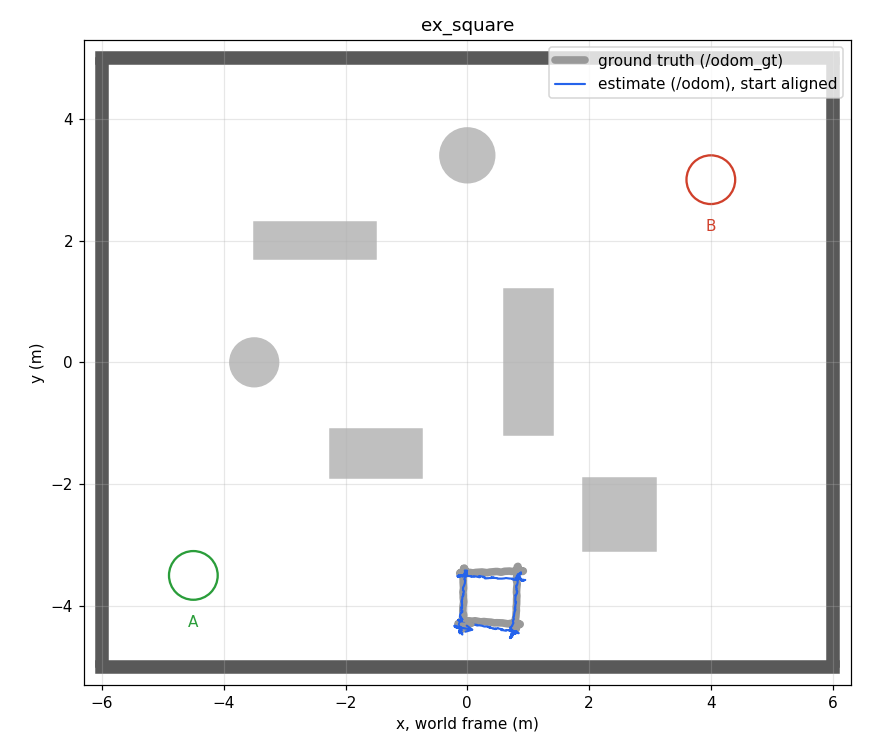

Start · Project 1
First steps: launch, inspect, walk, stop
Goal
Start the simulated Go2, find out what is running, make the robot walk forward, turn and stop from the command line, and measure what it actually did from the simulator's ground truth. You finish with a script that drives a fixed sequence, a plot of where the robot went, and a first video of your robot.
What you will learn
- Starting the stack and checking that it is up.
- Reading the ROS 2 graph: nodes, topics, message types, publishers and subscribers, rates.
- Commanding the robot on
/cmd_velwithros2 topic pub, and why you must always send a zero twist to stop it. - Reading a pose from
nav_msgs/Odometry, including the heading from a quaternion. - Writing two small rclpy scripts that run on simulated time: one that drives, one that measures.
- Comparing commanded motion, true motion (
/odom_gt) and estimated motion (/odom).
Before you start
You need the repository built (chapter 3) and the ros2 command line basics from
chapter 4. Chapter 7 explains the gait controller in
depth; this project only uses its interface.
Every terminal starts with:
cd go2-nav-sim
source env.sh
The scripts in this project are plain Python files. They need no build: python3 projects/p01_first-steps/<script>.py.
Steps
1. Start the stack
scripts/up.sh
Expected, after 30 s to a few minutes:
stack: ROS_DOMAIN_ID=42 GAZEBO_MASTER_URI=http://localhost:11345
stack up
up.sh starts three launch files in order and waits for each: sim.launch.py (Gazebo, the robot, the CHAMP gait controller,
the sensors), estimation.launch.py (2D scan, lidar odometry, EKF) and nav.launch.py (Nav2, AMCL, a passive mapper). The
robot is spawned on the green disc A at (-4.5, -3.5), facing +x. Gazebo runs without a window.
Check: ros2 topic echo --once /clock prints a sec value that grows each time you run it.
2. List what is running
ros2 node list | wc -l
ros2 node list | grep -v transform_listener
44
/amcl
/base_to_footprint_ekf
...
/lidar_odom
...
/p3d_gt
...
/quadruped_controller_node
/robot_state_publisher
/slam_toolbox
...
/quadruped_controller_node is CHAMP, the gait controller that turns a body velocity into leg joint trajectories.
/p3d_gt is a Gazebo plugin that publishes the true pose of the trunk. /lidar_odom and /odom_ekf produce the estimated
pose.
Check: the count is around 44, and /quadruped_controller_node is in the list.
3. Find the topic that moves the robot
ros2 node info /quadruped_controller_node
/quadruped_controller_node
Subscribers:
/body_pose: geometry_msgs/msg/Pose
/clock: rosgraph_msgs/msg/Clock
/cmd_vel: geometry_msgs/msg/Twist
/parameter_events: rcl_interfaces/msg/ParameterEvent
Publishers:
/joint_group_effort_controller/joint_trajectory: trajectory_msgs/msg/JointTrajectory
...
The controller listens to /cmd_vel, a geometry_msgs/msg/Twist. Look at the message:
ros2 interface show geometry_msgs/msg/Twist
# This expresses velocity in free space broken into its linear and angular parts.
Vector3 linear
float64 x
float64 y
float64 z
Vector3 angular
float64 x
float64 y
float64 z
For a walking robot on flat ground only three fields matter: linear.x (forward, m/s), linear.y (left, m/s) and
angular.z (turn left, rad/s). CHAMP clips them to 0.3 m/s, 0.25 m/s and 0.5 rad/s (gait.yaml, chapter 7).
Who else publishes there:
ros2 topic info -v /cmd_vel | grep -E "Node name:|count"
Publisher count: 6
Node name: velocity_smoother
Node name: behavior_server
Node name: behavior_server
Node name: behavior_server
Node name: behavior_server
Node name: behavior_server
Subscription count: 1
Node name: quadruped_controller_node
behavior_server appears five times because each of its five behaviour plugins (spin, backup, drive_on_heading,
assisted_teleop, wait in src/go2_nav_sim/config/nav2_params.yaml) has its own publisher. Nav2's velocity_smoother and
behavior_server are idle until Nav2 is given a goal. While you drive by hand they stay quiet;
if you send a Nav2 goal at the same time, both of you command the same robot. (With ros2 topic echo /cmd_vel running for
25 s while I sent one command, the echo printed that one message and nothing else.)
Check: Subscription count: 1, and the subscriber is quadruped_controller_node.
4. Measure the sensor rates
ros2 topic hz -s /imu/data
-s measures in simulated time, which is what the sensors are configured in. Stop each with Ctrl-C after a few seconds.
What I measured, 20 s per topic, all at once:
| Topic | Type | Rate (sim time) | Published by |
|---|---|---|---|
/joint_states |
sensor_msgs/JointState |
249.2 Hz | ros2_control |
/imu/data |
sensor_msgs/Imu |
98.6 Hz | Gazebo IMU plugin |
/odom_gt |
nav_msgs/Odometry |
50.0 Hz | /p3d_gt, ground truth |
/odom |
nav_msgs/Odometry |
50.0 Hz | /odom_ekf, the estimate |
/lidar/points |
sensor_msgs/PointCloud2 |
10.04 Hz | Gazebo 3D lidar |
/scan |
sensor_msgs/LaserScan |
10.03 Hz | pointcloud_to_laserscan |
/camera/image_raw |
sensor_msgs/Image |
2.39 Hz | Gazebo RGB-D camera, configured for 10 Hz |
The camera came in at a quarter of its configured rate because the machine was loaded (load average 38 on 32 threads) and rendering is the most expensive sensor. Expect a different camera rate on your machine; the other rates should match.
Check: /imu/data near 100 Hz and /odom_gt at 50 Hz.
5. Read the true pose
ros2 topic echo --once /odom_gt --field pose.pose
position:
x: 0.09921225913936116
y: 0.012619213036241028
z: 0.21497210013485696
orientation:
x: ...
y: ...
z: ...
w: ...
/odom_gt is relative to the spawn point A, although its frame_id says world: the plugin subtracts A
(urdf/sensors.xacro, xyz_offset). Add (-4.5, -3.5) to get arena coordinates. The 0.10 m in x before the robot has
moved is the slide on landing after the spawn. z is the trunk height, about 0.215 m. The heading is hidden in the
quaternion; the measuring script below converts it.
Check: x and y within about 0.15 m of zero.
6. Start the measuring script
In a second terminal:
python3 projects/p01_first-steps/measure.py --csv manual.csv
It prints the true pose in arena coordinates once per simulated second. Leave it running.
t 0.0 s x -4.40 y -3.49 heading 2.1 deg speed 0.00 m/s
t 1.0 s x -4.40 y -3.49 heading 2.1 deg speed 0.00 m/s
Check: one line per simulated second, speed 0.00.
7. Walk forward, then stop
In a third terminal:
timeout 10 ros2 topic pub -r 10 /cmd_vel geometry_msgs/msg/Twist "{linear: {x: 0.3}}" > /dev/null
This publishes 0.3 m/s forward ten times a second until timeout ends it after 10 s of wall time. Watch the measuring
terminal: the speed climbs to 0.30 m/s within about a second. Now wait a few seconds after the command has returned. The robot
does not stop. CHAMP keeps executing the last command it received; there is no timeout. Stop it with a zero twist:
ros2 topic pub --once /cmd_vel geometry_msgs/msg/Twist "{}"
What the measuring script printed in my run:
t 5.0 s x -4.40 y -3.49 heading 1.3 deg speed 0.00 m/s
t 6.0 s x -4.09 y -3.49 heading 1.4 deg speed 0.31 m/s
t 7.0 s x -3.80 y -3.47 heading 2.1 deg speed 0.29 m/s
...
t 13.0 s x -1.99 y -3.46 heading -1.0 deg speed 0.30 m/s
t 14.0 s x -1.69 y -3.46 heading -1.4 deg speed 0.30 m/s
t 15.0 s x -1.59 y -3.46 heading 0.4 deg speed 0.10 m/s
t 16.0 s x -1.59 y -3.46 heading 0.3 deg speed 0.00 m/s
The robot covered 2.81 m (x from -4.40 to -1.59) and drifted 3 cm to the left. Your distance will differ: timeout counts
wall time, and how much simulated time fits into 10 s of wall time depends on how loaded your machine is. A learner's run of
this step on the same machine covered 3.20 m. What should match is the speed of 0.30 m/s, the robot still walking after
timeout returns, and the speed falling to 0.00 after the zero twist. In a separate test I published one 0.2 m/s
message with --once and nothing else: 21 s later the robot was still walking at 0.19 m/s and had covered 3.99 m, and its trunk
was 0.24 m from the inner face of the west wall when I sent the zero.
Check: speed 0.00 within a second of the zero twist.
8. Turn, then stop
timeout 10 ros2 topic pub -r 10 /cmd_vel geometry_msgs/msg/Twist "{angular: {z: 0.5}}" > /dev/null
ros2 topic pub --once /cmd_vel geometry_msgs/msg/Twist "{}"
t 17.0 s x -1.59 y -3.46 heading 0.3 deg speed 0.00 m/s
t 18.0 s x -1.62 y -3.46 heading 25.6 deg speed 0.03 m/s
t 19.0 s x -1.66 y -3.49 heading 53.4 deg speed 0.05 m/s
...
t 23.0 s x -1.60 y -3.62 heading 162.4 deg speed 0.04 m/s
t 24.0 s x -1.58 y -3.63 heading 177.0 deg speed 0.00 m/s
The heading grows by about 27 degrees per second, 0.47 rad/s against the 0.5 commanded. The total angle depends on the machine for the same reason as the distance in step 7: my run turned 175 degrees, a learner's run 199 degrees. The rate of about 27 degrees per second is what to compare. The trunk also moves a few centimetres while turning in place: the turn is made of steps, and the centre of rotation is not exactly the trunk origin.
Check: heading increases while the command runs, and stays put after the zero twist.
9. Read the summary
Press Ctrl-C in the measuring terminal:
ground truth: 26.5 s path 3.39 m net 2.82 m mean speed 0.128 m/s turned 174.8 deg end (-1.58, -3.63) heading 176.9 deg
estimate : 26.5 s path 5.57 m net 2.85 m mean speed 0.210 m/s turned 184.3 deg end (-1.44, -3.70) heading -170.7 deg
wrote manual.csv
The first line is the truth. The second is what the robot itself believes, from lidar and IMU (/odom). The net
displacement agrees to 3 cm, the turn is overestimated by 9.5 degrees, and the path length of the estimate is 64 % too
long; How the code works explains why the path length is the wrong thing to compare.
Check: net within a few centimetres between the two lines. The other numbers depend on how far your robot walked and
turned in steps 7 and 8, so they will not match mine.
10. Drive a sequence from a script, and record it
Typing commands gives uneven timing: each ros2 process takes a few seconds to start, and timeout counts wall time
while the robot lives in simulated time. drive.py publishes a list of vx,vy,wz,seconds segments on the simulated clock and
always ends with a zero twist. Restart the stack first so the robot is back on A (scripts/up.sh stops the old one). Then,
in three terminals:
python3 projects/p01_first-steps/record.py first_walk.mp4 --topic /spectator/cam/image_raw # terminal 1, the video
python3 projects/p01_first-steps/measure.py --csv drive.csv # terminal 2, the measurement
python3 projects/p01_first-steps/drive.py # terminal 3, the commands
record.py is the shared recorder projects/common/record_cam.py with one change: it asks for reliable delivery of the
images instead of best effort. See the record_cam.py row in If it goes wrong for why.
The default sequence is 0.3 m/s forward for 10 s, a left turn at 0.5 rad/s for 3.2 s, and 0.3 m/s forward for 3 s.
drive.py prints each change of command:
0.1 s vx 0.30 vy 0.00 wz 0.00
10.0 s vx 0.00 vy 0.00 wz 0.50
13.2 s vx 0.30 vy 0.00 wz 0.00
stop: zero twist sent
When it has stopped, press Ctrl-C in terminals 1 and 2. record.py prints the number of frames it wrote, at 10 frames per
simulated second: first_walk.mp4: 310 frames in my latest run, with a load average of about 58 (31.0 s of video according
to ffprobe). My first measurement:
ground truth: 21.6 s path 4.28 m net 2.96 m mean speed 0.198 m/s turned 91.0 deg end (-1.51, -2.68) heading 90.8 deg
estimate : 21.6 s path 6.19 m net 2.96 m mean speed 0.287 m/s turned 94.5 deg end (-1.66, -2.64) heading 94.5 deg
A later run on the same machine (results/drive_run3.csv) ended at (-1.59, -2.62) and turned 91.1 degrees.
The video is the second run of the same sequence, recorded from the spectator camera with a reliable subscription, as
record.py does (22 s, simulated time):
Check: turned near 90 degrees and the robot ends about 0.9 m north of where it turned.
11. Plot the run
python3 projects/p01_first-steps/plot_run.py drive.csv drive.png
My first scripted run:

Ground truth is drawn as a wide grey band and the estimate as a thin blue line on top of it. The two are a few centimetres apart, so where the estimate is good you see blue running down the middle of the grey band.
The arena outline, boxes and pillars are drawn from src/go2_nav_sim/scripts/make_arena.py, the file that also generated
the Gazebo world and the navigation map, so the plot and the simulator cannot disagree about where the obstacles are.
Check: the grey band starts on A, runs 3 m east, turns north and stops below the box at (-1.5, -1.5).
12. Stop everything
scripts/stop.sh
Check: ros2 node list prints nothing (it may take a few seconds for the daemon to forget the nodes).
How the code works
Three scripts, all plain rclpy, all on simulated time. record.py only wraps the shared recorder (step 10).
measure.py
The node subscribes to both odometry topics with one callback factory, and stores (t, x, y, yaw) per message. Times come
from the message stamps, not from the arrival time, because on a loaded machine messages arrive in bursts:
def on_odom(key):
def cb(m):
t = m.header.stamp.sec + m.header.stamp.nanosec * 1e-9
p = m.pose.pose
data[key].append((t, p.position.x + A[0], p.position.y + A[1], yaw_of(p.orientation)))
return cb
The heading is the rotation about the vertical axis, taken from the unit quaternion (x, y, z, w):
yaw = atan2(2(wz + xy), 1 - 2(y² + z²))
def yaw_of(q):
return math.atan2(2 * (q.w * q.z + q.x * q.y), 1 - 2 * (q.y * q.y + q.z * q.z))
The summary adds up small steps:
for (_, x0, y0, a0), (_, x1, y1, a1) in zip(samples, samples[1:]):
path += math.hypot(x1 - x0, y1 - y0)
turn += wrap(a1 - a0) # sum of small steps, so a 400 degree spin counts as 400, not 40
The summary and the CSV are written after Ctrl-C, so measure.py turns off rclpy's own Ctrl-C handler, as drive.py does
(explained below). With the handler on, one of five Ctrl-Cs in my runs raised a RuntimeError inside rclpy and the summary
was lost; with it off, ten of ten wrote the CSV.
wrap maps an angle into [-180, 180) degrees. Subtracting the first heading from the last would be wrong as soon as the robot
crosses ±180 degrees (step 9 ends at 176.9 degrees true and -170.7 degrees estimated, which are 12.4 degrees apart, not 347).
Each step between two 50 Hz samples is far smaller than 180 degrees, so wrapping each step is safe.
Path length is the sum of the step lengths. On ground truth that is the distance walked plus a little trunk sway. On the
estimate it is inflated: /odom is published at 50 Hz but corrected by the lidar at 10 Hz, so it moves in small jumps. In
the straight part of the scripted run the largest step between two /odom samples was 3.4 cm, against 0.8 cm for ground
truth, and the estimated path came out 1.9 m longer than the true one. Compare positions and headings, not path lengths.
drive.py
The sequence logic is a pure function, so it is unit-tested without ROS:
def command_at(segs, t):
for vx, vy, wz, dur in segs:
if t < dur:
return vx, vy, wz
t -= dur
return None
A 20 Hz timer on the node's clock (simulated time, because use_sim_time is true) looks up the command for the elapsed time
and publishes it. If the simulation runs at half speed, the sequence takes twice as long in wall time and the robot still
walks for 10 s of its own time.
Stopping safely takes two details:
rclpy.init(signal_handler_options=SignalHandlerOptions.NO)
...
finally:
for _ in range(3):
pub.publish(Twist())
time.sleep(0.05)
rclpy's default Ctrl-C handler shuts the ROS context down before your finally block runs, and a publisher on a shut-down
context cannot send. With the handler disabled, Ctrl-C is an ordinary KeyboardInterrupt, the context is still valid, and the
zero twist goes out. It is sent three times because one lost message would leave the robot walking.
Predicting where the robot should end
Integrating the commands from the true start pose (x₀, y₀, θ₀) gives where a perfect robot would stop:
x₁ = x₀ + 3.0 cos θ₀, θ₁ = θ₀ + 0.5 × 3.2, x₂ = x₁ + 0.9 cos θ₁ (and the same with sin for y)
From (-4.35, -3.51, -0.2°) that is (-1.37, -2.62). Ground truth ended at (-1.51, -2.68), 0.15 m away. The forward leg covered 2.94 m when the heading passed 5 degrees (3.0 m commanded), and the turn was 91.0 degrees (91.7 commanded). The steady forward speed between 6 s and 12 s was 0.300 m/s, so the loss is in the gait starting and stopping, plus the trunk shifting during the turn.
plot_run.py
Draws the CSV over the arena. /odom_gt is zero at the spawn point; the robot then slides 0.10 to 0.15 m on landing, and
/odom is zero wherever the robot stood when the estimator started. The plot translates the estimate so both start at the
same point (no rotation), so what is left is the estimator's error during the run plus any heading error it already had.
Results
All from my runs on one machine (32 threads, load average 38 to 135 from other simulations). Ground truth from /odom_gt,
estimate from /odom.
| Run | Command | Ground truth | Estimate |
|---|---|---|---|
| Manual forward (step 7) | ros2 topic pub -r 10, vx 0.3 |
2.81 m at 0.30 m/s, 3 cm lateral drift | |
| Manual turn (step 8) | ros2 topic pub -r 10, wz 0.5 |
about 0.47 rad/s; whole session turned 174.8° | turned 184.3°, 9.5° too much |
| One message, no stop | ros2 topic pub --once, vx 0.2 |
still 0.19 m/s after 21 s, 3.99 m | |
drive.py default, run 1 |
3.0 m, 91.7°, 0.9 m | 2.94 m, 91.0°, end 0.15 m from prediction | end 0.03 m from truth (start aligned), heading 3.6° off |
drive.py default, run 2 (video) |
3.0 m, 91.7°, 0.9 m | 2.97 m, 91.3°, end 0.11 m from prediction | end 0.07 m from truth (start aligned), heading 8.2° off |
drive.py default, run 3 |
3.0 m, 91.7°, 0.9 m | 2.96 m, 91.1°, end 0.13 m from prediction | end 0.02 m from truth (start aligned), heading 3.4° off |
| Exercise 1, vx 0.5 after wz -0.5 | clipped to 0.3 | 0.29 to 0.32 m/s (two runs) | |
| Exercise 2, vy -0.25 | 1.5 m to the right | 0.26 to 0.29 m/s, 1.61 and 1.60 m, heading -6.9° and -2.3° | turned -12.7° and -4.0° |
| Exercise 3, square | 4 × (1.02 m, 91.7°) | turned 363.0° and 355.8°, ended 0.10 and 0.14 m from its start | turned 370.0° and 364.1°, net 0.16 and 0.22 m |
Steady forward speed between 6 s and 12 s of runs 1 and 2: 0.300 and 0.302 m/s; run 3, 2 s to 8 s after the robot started moving (its CSV begins 8 s before the motion): 0.300 m/s. In runs 1 and 2 the estimate ended 3.6° and 8.2° off the true heading, in opposite directions: it measured the turn as 94.5° and 84.5° against 91.0° and 91.3° true. Run 3 measured 94.6° against 91.1°. The estimator is the subject of chapter 9; here it is enough to know that its heading can be several degrees off after one turn.
Commands: steps 6 to 10 above and the exercises below. The forward-leg length and steady speed come from the CSVs:
import csv, math
gt = [(float(r['t']), float(r['x']), float(r['y']), float(r['yaw']))
for r in csv.DictReader(open('projects/p01_first-steps/results/drive_run1.csv')) if r['source'] == 'gt']
t0, x0, y0, a0 = gt[0]
leg = next(s for s in gt if abs(math.degrees(s[3] - a0)) > 5) # first sample 5 deg off the start heading
p, q = (min(gt, key=lambda s: abs(s[0] - t0 - T)) for T in (6, 12))
print(f'forward leg {math.hypot(leg[1] - x0, leg[2] - y0):.2f} m, speed {math.hypot(q[1] - p[1], q[2] - p[2]) / (q[0] - p[0]):.3f} m/s')
# forward leg 2.94 m, speed 0.300 m/s
The CSVs of all my runs are in results/ (manual, drive_run1 to drive_run3, and ex_clip, ex_side, ex_square with
a _run2 copy of each), so you can re-plot them without the simulator. Run 3 and the _run2 exercises were done in one
session, in the order of the exercises above.
Unit tests for the pure logic (quaternion to heading, angle wrapping, summary, sequence parsing):
python3 -m pytest -q projects/p01_first-steps
# 7 passed
Try this
Each exercise starts where the previous one stopped, so do them in this order, straight after step 10 (the robot is at
about (-1.6, -2.6), facing north). The paths were chosen to stay clear of the boxes from there. If your robot is somewhere
else, restart with scripts/up.sh and run drive.py without arguments first. Run measure.py in another terminal during
each one.
- Ask for more than the robot can do: turn right to face east, then 0.5 m/s forward. What speed does
measure.pyreport?
bash
python3 projects/p01_first-steps/drive.py 0,0,-0.5,3.2 0.5,0,0,6 # wz -0.5 is a right turn: from north to east
Answer: 0.29 to 0.32 m/s on every full second of the straight part after the first, which is the gait speeding up. CHAMP
clips linear.x to max_linear_velocity_x = 0.3 and says nothing about it; the publisher gets no error. In my two runs
the heading was 8 and 11 degrees when the robot started walking east (the turn was a few degrees short) and drifted to
about 2 degrees by the end. The robot stopped at (0.20, -2.63) and (0.14, -2.49).
- Walk sideways to the right:
linear.y= -0.25 m/s for 6 s. Is it as clean as walking forward?
bash
python3 projects/p01_first-steps/drive.py 0,-0.25,0,6
Answer: no. In two runs the robot moved 1.61 and 1.60 m (6 s at 0.25 m/s would be 1.5 m) at 0.26 to 0.29 m/s, faster than the 0.25 m/s clip, and crept backwards by 0.29 and 0.28 m while facing about +x. The heading drift varies from run to run: -6.9 and -2.3 degrees in mine, +1.3 in a learner's run. Sideways walking is the least accurate of the three motions, so prefer turning and walking forward when you need precision.
- Walk a square with 1 m sides: four times forward 0.3 m/s for 3.4 s, then left 0.5 rad/s for 3.2 s. How far from its start does the robot end, and how much has it turned?
bash
python3 projects/p01_first-steps/drive.py 0.3,0,0,3.4 0,0,0.5,3.2 0.3,0,0,3.4 0,0,0.5,3.2 0.3,0,0,3.4 0,0,0.5,3.2 0.3,0,0,3.4 0,0,0.5,3.2
Answer from my two runs: turned 363.0 deg, net 0.10 m and turned 355.8 deg, net 0.14 m. A learner who restarted
and walked the square from A got 353.9 degrees and 0.12 m. The commands ask for 4 × 0.5 × 3.2 rad = 366.7 degrees; each
side came out at about 0.9 m because the gait needs about a second to reach full speed. The estimate turned 370.0 and 364.1
degrees. Ground truth grey, estimate blue (shifted to the same start, not rotated, so the heading error it already had
shows):

If it goes wrong
| Symptom | Cause | Fix |
|---|---|---|
TIMEOUT waiting for: gazebo from up.sh, but logs/up_sim.log shows the controllers loaded |
On a loaded machine (load average above 100 in my case) gz stats did not answer within its 5 s timeout, so up.sh gave up although Gazebo was running |
Check ros2 topic echo --once /clock. If the clock runs, start the other two launch files by hand: ros2 launch go2_nav_sim estimation.launch.py, wait for a pose= line, then ros2 launch go2_nav_sim nav.launch.py. Or run scripts/up.sh again when the machine is quieter |
The robot keeps walking after ros2 topic pub ended |
CHAMP holds the last command | ros2 topic pub --once /cmd_vel geometry_msgs/msg/Twist "{}" |
timeout 10 ros2 topic pub moves the robot for less (or more) than 10 s |
timeout counts wall time, including the 2 to 3 s the ros2 process needs to start; the robot moves in simulated time |
Use drive.py, which times segments on /clock |
projects/common/record_cam.py prints 1 frames and the video is a still |
It subscribes best effort (qos_profile_sensor_data). A 960 × 540 image is 1.5 MB, sent in many fragments; on a loaded machine one lost fragment loses the whole image, and best effort does not resend. In 25 s a best-effort subscriber got 2 spectator images, a reliable one 150 |
Record with projects/p01_first-steps/record.py (same arguments), which subscribes reliably. It wrote 310 frames (31.0 s) for the step 10 sequence at a load average of about 58 |
The estimate's end differs from the truth by a constant 0.1 to 0.2 m even right after a restart |
/odom_gt starts at the spawn point, /odom where the robot had settled; the robot slides 0.10 to 0.15 m on landing |
Compare displacements, or shift the estimate's start onto the truth as plot_run.py does |
| The robot is somewhere you did not expect after several exercises | Every run starts where the last one stopped | Restart with scripts/up.sh to return to A |